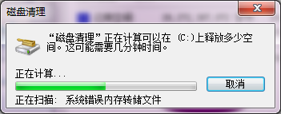
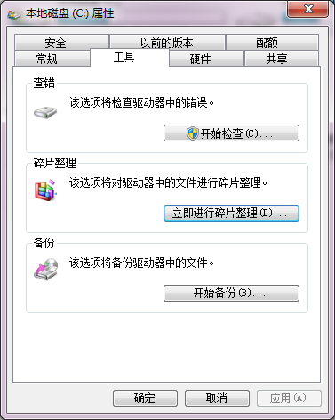
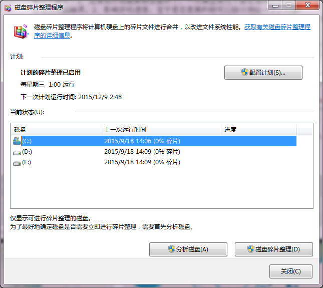

为电脑清理垃圾
你的电脑是不是感觉很卡？感觉电脑里有很多垃圾用360、管家清理总是几十G。如果是，那么Mr·Zangwill的这篇文章将教你怎么使用电脑自带的工具清理电脑。
目前网上有很多免费的电脑管理软件，比如360、电脑管家、百度卫士。像这类的电脑管理软件我一般不建议安装。主要有以下两点：1、经常动不动就叫你安装补丁，一天弹出来几个高危漏洞教你安装补丁，安着安着殊不知电脑运行速度渐渐变慢，严重的甚至造成电脑崩溃。2、影响开机速度，至于是否是真的你可以自行测验一下。
一般像这类电脑管理软件清理垃圾一般都没什么用，动不动就几十G，甚至刚清理完成后再清理仍然有几G的垃圾，要是一直这样清理下去电脑上的东西不被清理完才怪！
接下来我向大家介绍如何用电脑自带的清理垃圾软件清理垃圾
首先：打开我的电脑，右键系统盘（一般垃圾只用清理系统盘就可以了）单击属性会出现下图：

点击磁盘清理会出现下图：
系统会扫描电脑上的垃圾，如果是电脑垃圾太多这个过程会比较久。
稍等片刻之后会出现下图

点两下确定就可以清理垃圾了，清理完垃圾以后对话框会自动关闭。一般建议一个星期一次清理垃圾就可以了。
要是感觉清理的还不够彻底的话还有一种方法，不过花的时间比较久。
还是进入系统盘的属性界面，点击上面的工具选项卡
单击碎片整理出现如下对话框：
选中系统盘，然后单击碎片整理就可以了
以上方法对Xp win7、8、10都适用
好了，打完收工，如果有什么疑问的话可以在留言板留言！